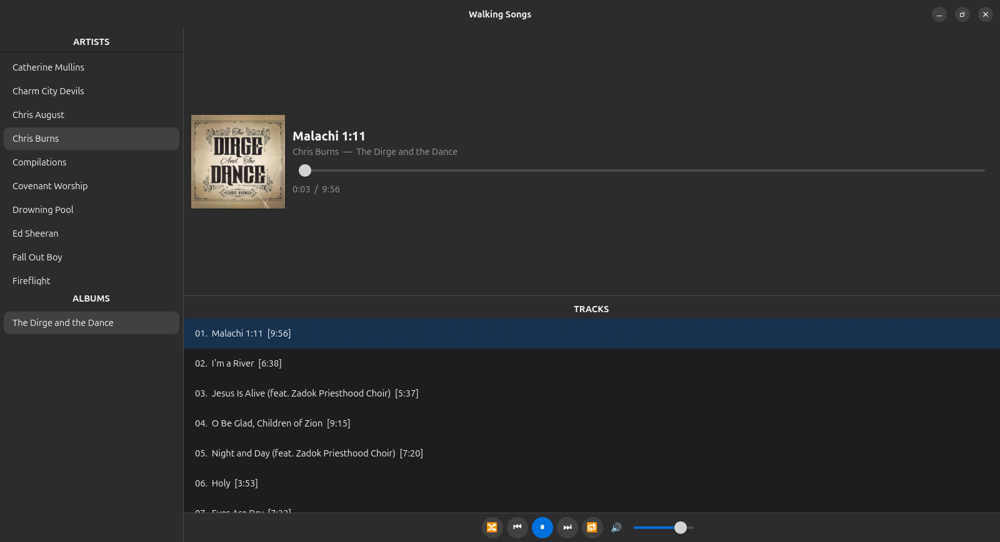
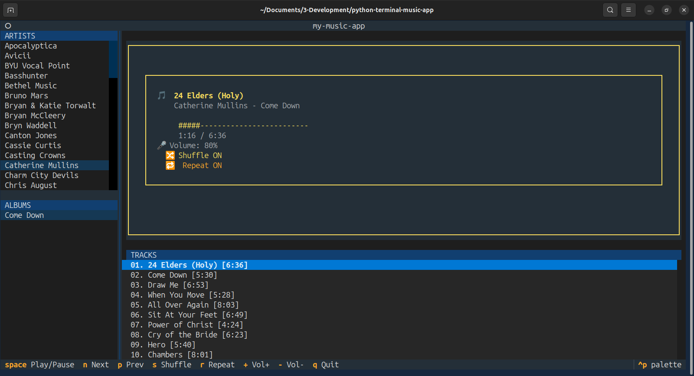

01 / FEATURED PROJECT
Completed
Python application · API integration · UI development
Music Library Player
A Python music player that scans a designated directory, finds the available music, and lets the user play it through either a graphical interface or a text-based interface.
- Scans a local directory to discover music files
- Retrieves album artwork through Apple's music API
- Supports shuffle, single-track repeat, and album repeat
- Provides both a GUI and a TUI for different ways of interacting
The source repository is private, so the screenshots below are provided as visual placeholders rather than public source-code links.

